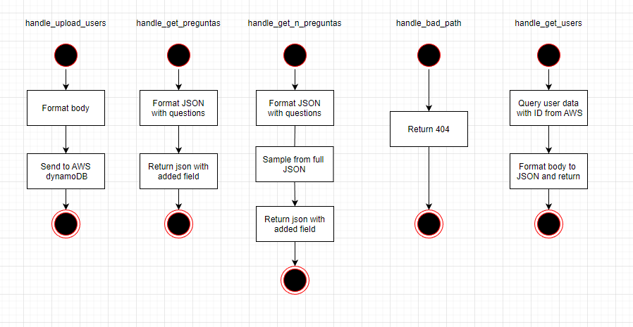
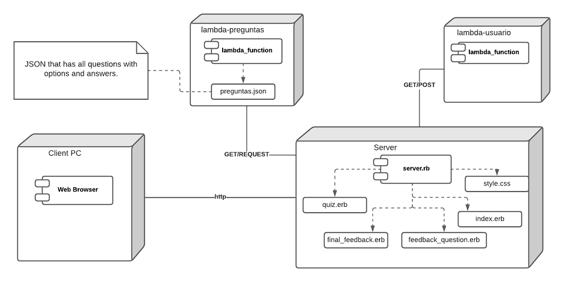

Application Design and Architecture¶ ↑
General overview¶ ↑
This project implements a quiz application using two microservices and using various AWS services. The front-end app was made with Ruby and Sinatra and the microservices were uploaded to lambda functions to create requests.
Authors¶ ↑
-
A01377950 Zabdiel Valentín Garduño Vivanco
-
A01377942 Luis Jonathan Rosas Ramos
-
A01377072 Emiliano Heredia García
If you haven’t done so already, install the Hanna Nouveau Ruby gem. At the terminal type:
$ gem install hanna-nouveau
The directory structure for the application and its documentation is as follows:
app_quiz/
├─ doc/ Folder produced by RDoc.
├─ img/ Folder for the documentation’s image files.
└─ src/ Folder for the application’s source code.
├─ public/ Folder for the server’s public documents.
│ └─ stylesheets/ Folder for the application’s CSS files.
└─ views/ Folder for the application’s views (ERB files).
The builddocs.sh shell script contains the required instructions to produce the RDoc documentation. Run the script from the app_quiz directory, typing at the terminal:
$ bash builddocs.sh
The root of the documentation should now be available at: app_quiz/doc/index.html
Use any web browser to see the result.
Installing and Running the Application¶ ↑
Use this section to explain any details on how to install and run you application.
You need to have Ruby 2.6 or better and the Sinatra gem installed in your system to run the app_quiz web application. To run the server type the following command at the terminal from the app_quiz/src directory:
$ ruby -I . -w server.rb
Afterwards, point your web browser the server’s root URL.
4+1 Architectural View Model¶ ↑
You must use Philippe Kruchten’s “4+1 View Model” to document your application’s architecture. I suggest using the draw.io site to produce the required UML diagrams.
Logical View¶ ↑
The logical view contains information about the various parts of the system. In UML the logical view is typically modeled using class diagrams.
For example, the following figure represents the UML class diagram for the lambda_handler model of questions API and its functions:

The following figure represents the UML class diagram for the lambda_handler model of users API and its functions:
The following figure represents the UML class diagram for the server.rb model and its functions:
Process View¶ ↑
The process view focuses on the runtime behavior of the system of both API questions and API users. In UML, activity diagrams are used to model this view.

Development View¶ ↑
The development view focuses on software modules and subsystems. In UML, package diagrams are used to model the development view.
Physical View¶ ↑
The physical view describes the physical deployment of the system, revealing which pieces of software run on what pieces of hardware. In UML, deployment diagrams are used to model the physical view.

Scenarios¶ ↑
This view describes the functionality of the system from the perspective from outside world. It contains diagrams describing what the system is supposed to do from a black box perspective. UML use case diagrams are used for this view.

Patterns Used¶ ↑
Briefly mention all the patterns that your application uses and identify where exactly. In our example, the following pattern are clearly used:
-
Domain-Specific Language: The
server.rbfile consists of a series of Sinatra routes. Sinatra is a DSL for creating web applications in Ruby. -
Model-View-Controller: The application follows the classical web implementation of the MVC architectural pattern. The models (
.rbfiles) and views (.erbfiles) are stored in the correspondingmodelsandviewsdirectory. The controller is contained inserver.rbfile.
References¶ ↑
Mention here any consulted books or web resources. Examples:
-
M. Fowler. UML Distilled: A Brief Guide to the Standard Object Modeling Language, 3rd Edition. Addison-Wesley, 2003.
-
E. Gamma, R. Helm, R. Johnson, J. M. Vlissides. Design Patterns: Elements of Reusable Object-Oriented Software. Addison-Wesley, 1994.
-
A. Harris, K. Haase. Sinatra: Up and Running. O’Reilly, 2011.
-
Ph. Kruchten. The 4+1 View Model of Architecture. IEEE Software, vol. 12 (6), pp. 45-50, 1995. http://www.ics.uci.edu/~andre/ics223w2006/kruchten3.pdf Accessed November 26, 2022.
-
R. Olsen. Design Patterns in Ruby. Addison-Wesley, 2007.
-
Ruby-Doc.org. RDoc Markup Reference. http://ruby-doc.org/stdlib-3.0.0/libdoc/rdoc/rdoc/RDoc/Markup.html Accessed November 26, 2022.